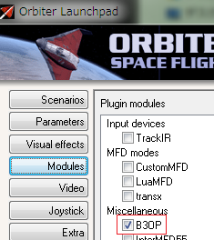

Vostok v1.0・v1.1はOrbiter2010でボストーク宇宙船を再現したMODです。
ダウンロードしたファイルを解凍して、中身をOrbiterフォルダに上書き。
v1.0とv1.1は共存できないので注意してください。
ゲームが正常に終了しない件については以下の記事を参照してください。
R-9 MODのダウンロード・インストール
注意：v1.0 + orbiter.exeでしかВЗОРは使えません。（D3D9は不可）
ModulesタブでВЗОРにチェックを入れる。

Vostok MODの日本語操作ガイドを作ってみました。
Baikonur 2010: Surface Tiles v1.0のインストール
上記のMODを導入すると、発射台付近のテクスチャの色が合わなくなります。
以下のパッチを導入することで自然な感じになります。
ダウンロードしたファイルを解凍して、中身をOrbiterフォルダに上書き。
ボストークの操縦システムと計器をほぼ完全に再現しています。
環境の変化によって計器の表示が変わるなど、細かいところもシミュレートされています。
ВЗОРを使用して、実機同様の操作で地上に着陸することもできます。